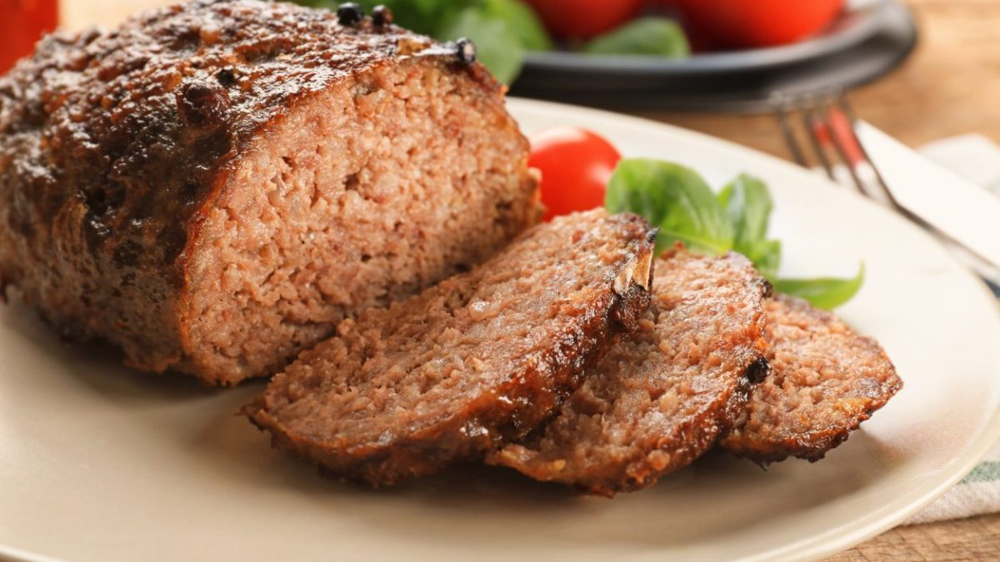

This is a polpettone do it with beer
Ingredients:
- 1 kg (2 lbs) chopped beef, veal and/or pork, in equal amounts
- 100g (3-1/2 oz) grated parmesan cheese
- 2 eggs
- 2 large slices of good bread, preferably homemade, soaked in water, squeezed dry and shredded
- 3-4 clove of garlic, finely minced into the bowl, finely chopped garlic
- A sprig or two of parsley, finely minced
- Salt
- Freshly ground pepper
For the stuffing:
- A ball of mozzarella or scamorza, sliced
For garnish
- Potatoes, left whole if small or otherwise peeled or cut into wedges, as many as you like
- A few cherry tomatoes (optional)
- A splash of white wine
Direction
- Mix all the ingredients together very well—you'll need your hands for the job—until you have an evenly
amalgmated mixture. Form into an oval loaf.
- If you want to, open up a fairly deep well in the middle of the loaf and add slices of mozzarella or another
meltable cheese like scamorza. Close up the well and reform the loaf.
- Now place the loaf in a baking dish.
- Toss the potatoes, along with a few cherry tomatoes or wedges of regular tomatoes, with olive oil, salt and
pepper in a mixing bowl until the potatoes (and tomatoes if using) are well coated. Pour them around the
meatloaf. Splash on a bit of white wine over everything.
- Bake in a hot oven (200 C, 400 F) for 45 minutes to an hour, tossing the potatoes and basting the loaf from
time
to time with the cooking juices, until the polpettone is nicely browned and the potatoes are tender and just
lightly spottled on the outside. The potatoes are done when you stick a knife in them and the potato stays
where
it is when you lift it out.
- Serve the polpettone whole, if you like, directly from the baking dish for a 'family style' meal, or slice
it
attractively on a serving plate, surrounded by the potatoes.